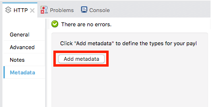

DataWeave Flatfile Schemas
DataWeave allows you to process several different types of data. For most of these types, you can import a schema that describes the input structure in order to have access to valuable metadata at design time. See To Define Input and Output Structure of a Transformation.
DataWeave uses a YAML format called FFD (for Flat File Definition) to represent flat file schemas. The FFD format is very flexible to support a range of use cases, but is based around the concepts of elements, composites, segments, groups and structures.
Schemas must be written in Flat File Schema Language, with a .ffs extension. This language is very similar to EDI Schema Language (ESL), which is also accepted by Anypoint Studio.
On DataWeave, you can bind your input or your output to a flat file schema through a property. See About Transform Message Component for instructions on how to do this through the Studio UI. If you want to do this through code, see DataWeave formats for more information, and keep in mind that the way these properties are set depends on if you’re defining the input or the output.
|
If you intend to use a fixed-width format, you can set up your structure directly through an editor in the UI of the Transform Message component, that makes this a lot easier, just select the |
Types of Components in a Schema
Here are the different types of components that make up a flat file schema, going from the most elementary to the more complex. Elements and Segments are always required, whilst composites, groups and structures may be needed depending on the top level structure of your document.
-
element - an element is a basic data item, which has an associated type and fixed width, along with formatting options for how the data value is read and written.
-
composite - (optional) a group of elements. It can also include other child composites.
-
segment - a line of data, made up of any number of elements and/or composites which may be repeated.
-
group - (optional) several segments grouped together. It can also include other child groups.
-
structure - a hierarchical organization of segments, which requires that the segments have unique identifier codes as part of their data.
Top-level structure of an FFD Document
The top-level definition in an FFD document starts with the form of the schema, in this case it must always be "FLATFILE" ("COPYBOOK" and "FIXEDWIDTH" are treated as synonyms for "FLATFILE"). The rest depends on the form of definitions present in the file, with the following alternatives:
-
single segment - segment information directly at the top level (including a values key giving the element and/or composite details of the segment)
-
multiple segments - a segments key with multiple child objects, each defining one segment
-
multiple structures - a structures key with multiple child objects, each defining one structure
Single Segment
If you are only working with one type of record, you only need to have a segment definition for that record type in your FFD.

Here’s a simple schema with only one segment:
form: FLATFILE
id: 'RQH'
tag: '1'
name: Request Header Record
values:
- { name: 'Organization Code', type: String, length: 10 }
- { name: 'File Creation Date', type: Date, length: 8 }
- { name: 'File Creation Time', type: Time, length: 4 }This example simply defines a list of elements within a single segment, it has no composites to group them into.
| The simplified forms are only for convenience. You can use the segments key even if you only have a single child segment definition. |
Multiple Segments
If you’re working with multiple types of records in the same transform, you’ll need to use a structure definition that controls how these different records are combined.
Here’s an example of a multiple-segment schema:
form: FLATFILE
segments:
- id: 'RQH'
tag: '1'
name: Request Header Record
values:
- { name: 'Organization Code', type: String, length: 10 }
- { name: 'File Creation Date', type: Date, length: 8 }
- { name: 'File Creation Time', type: Time, length: 4 }
- id: 'RSH'
tag: '1'
name: Response Header Record
values:
- { name: 'Organization Code', type: String, length: 10 }
- { name: 'Company Name', type: String, length: 30 }
- { name: 'Customer Account Name', type: String, length: 22 }
- { name: 'Transaction Number', type: String, length: 15 }
- id: 'BCH'
tag: '2'
name: Batch Header Record
values:
- { name: 'Company Name', type: String, length: 30 }
- { name: 'Organization Code', type: String, length: 10 }
- { name: 'Expiration Date', type: String, length: 8 }
- { name: 'Account Number', type: String, length: 17 }This example contains 3 segments, each with a list of defined elements . It then defines each of these referenced elements, each with an id, name type and length.
Multiple Structures
If you have multiple structures or segment definitions in an FFD, when you apply your schema to an metadata description on a Transform Message component you’ll need to specify which one you want to use.
Here’s what the top-level structure of a schema with multiple structures might look like:
form: FIXEDWIDTH
structures:
- id: 'BatchReq'
name: Batch Request
tagStart: 0
tagLength: 1
data:
- { idRef: 'RQH' }
- groupId: 'Batch'
usage: O
count: '>1'
items:
- { idRef: 'BCH' }
- { idRef: 'TDR', count: '>1' }
- { idRef: 'BCF' }
- { idRef: 'RQF' }
- id: 'BatchRsp'
name: Batch Response
tagStart: 0
tagLength: 1
data:
- { idRef: 'RSH' }
- groupId: 'Batch'
usage: O
count: '>1'
items:
- { idRef: 'BCH' }
- { idRef: 'TDR', count: '>1' }
- { idRef: 'BCF' }
- { idRef: 'RSF' }
segments:
- id: 'RQH'
The above defines two different structures, the BatchReq structure and the BatchRsp structure. Each of these structures uses a particular sequence of segments and groups of segments. The group "batch" is repeated in both structures. A Batch group is composed of a single BCH line, multiple TDR lines and a single BCF line.
Note that this example is not complete, you’d need to define each of the referenced segments at the end. See Referenced vs in-lined Definitions to understand how these segments are being referenced in this example.
Element Definitions
Element definitions are the basic building blocks of application data, consisting of basic key-value pairs for standard characteristics. Here are several element definitions:
- { id: 'OrgCode', name: 'Organization Code', type: String, length: 10 }
- { id: 'CreatDate', name: 'File Creation Date', type: Date, length: 8 }
- { id: 'CreatTime', name: 'File Creation Time', type: Time, length: 4 }
- { id: 'BatchTransCount', name: 'Batch Transaction Count', type: Integer, format: { justify: zeroes }, length: 6 }
- { id: 'BatchTransAmount', name: 'Batch Transaction Amount', type: Integer, format: { justify: zeroes }, length: 10 }| Note that if you’re defining elements inline within a segment definition (as opposed to defining them at the ond of the document and referencing them), the 'id' field is not required. |
Element definitions may have the following attributes:
| Name | Description |
|---|---|
id |
Element identifier (unused for inline definitions, required for referenced definitions) |
name |
Element name (optional) |
type |
Value type code, as listed below |
format |
type-specific formatting information |
length |
Number of columns for value |
The allowed types for defining an element are the following:
| Name | Description |
|---|---|
Boolean |
Boolean value |
Date |
Unzoned date value with year, month, and day components (which may not all be shown in text form) |
DateTime |
Unzoned date/time value with year, month, day, hour, minute, second, and millisecond components (which may not all be shown in text form) |
Decimal |
Decimal number value, which may or may not include an explicit decimal point in text form |
Integer |
Integer number value |
PackedDecimal |
Packed decimal representation of a decimal number value |
Time |
Unzoned time value with hour, minute, second, and millisecond components (which may not all be shown in text form) |
String |
String value |
Value types support a range of format options that affect the text form of the values. Here are the main options, along with the types they apply to:
| Key | Description | Applies to |
|---|---|---|
implicit |
Implicit number of decimal digits (used for fixed-point values with no decimal in text form) |
Decimal |
justify |
Justification in field (LEFT, RIGHT, NONE, or ZEROES, the last only for numbers) |
All except PackedDecimal |
pattern |
For numeric values, the java.text.DecimalFormat pattern for parsing and writing; for date/time values, the java.time.format.DateTimeFormatter pattern |
Date, DateTime, Decimal, Integer, Time |
sign |
Sign usage for numeric values (UNSIGNED, NEGATIVE_ONLY, OPTIONAL, ALWAYS_LEFT, ALWAYS_RIGHT) |
Decimal, Integer |
Composite Definitions
Composites serve to reccurringly reference a set of elements that are typically presented together, for example 'name' and 'surname' could be bundled together into a single composite, as they’re likely to be referred to as a set.
Composite definitions are very similar to segment definitions, composed of some key-value pairs for standard characteristics along with lists of values. Composites may include references to elements or to other nested composites. Here’s a sample of a composite definition:
- id: 'DateTime'
name: 'Date/Time pair'
values:
- { name: 'File Creation Date', type: Date, length: 8 }
- { name: 'File Creation Time', type: Time, length: 4 }Composite definitions may have the following attributes:
| Name | Description |
|---|---|
id |
Composite identifier (unused for inline definitions, required for referenced definitions) |
name |
Composite name (optional) |
values |
List of elements and composites within the composite |
The values list takes the same form as the values list in a segment definition.
Segment Definitions
A segment describes a type of line in your data. They are mainly composed of references to elements and composites, together with some key-value pairs that describe the segment. In a mildly complex schema, you may have a structure that contains two different segments, where one of these describes the fields that go in the single header of a bill of materials such as date and person responsible, whilst the other segment describes the recurring fields that go into each of the actual items in the bill of materials.
Here’s a sample segment definition that includes one loose element and a composite with two elements within:
- id: 'RQH'
tag: '1'
name: Request Header Record
values:
- { name: 'Organization Code', type: String, length: 10 }
- id: 'DateTime'
name: 'Date/Time pair'
values:
- { name: 'File Creation Date', type: Date, length: 8 }
- { name: 'File Creation Time', type: Time, length: 4 }Segment definitions may include the following attributes:
| Section | Description |
|---|---|
id |
Segment identifier (unused for inline definitions, required for referenced definitions) |
tag |
Unique identifier tag for segment (ignored if using segments directly, rather than as part of a structure) |
name |
Segment name (optional) |
values |
List of elements and composites within the segment |
The 'values' field may either give definitions inline or list references, elements and composites by their ids (shown using a compact YAML syntax where the values for each reference are given as comma-separated key-value pairs enclosed in curly braces). The values used with references are:
| Section | Description |
|---|---|
idRef |
The referenced element or composite id |
name |
The name of the value in the segment (optional, element or composite name used by default) |
usage |
Usage code, which may be M for Mandatory, O for Optional, or U for Unused (optional, "Mandatory" assumed if not specified) |
count |
Maximum repetition count value, which may be any number or the special value '>1' meaning any number of repeats (optional, count value of 1 is used if not specified) |
Inline value definitions use the name, usage, and count key-value pairs from the reference form, combined with the composite or element key-value pairs defined below.
Every segment needs to include a tag numerical value, this is needed by the parser to identify the current segment. These numerical values are then added in to the output starting each segment.
Structure Definitions
Structure definitions are composed of a list of references to segments and group definitions, as well as a set of key-value pairs for standard characteristics. Segments may be further organized into groups consisting of a potentially repeated sequence of segments.
Here’s a sample structure definition again:
structures:
- id: 'Check'
name: My Check
tagStart: 0
tagLength: 1
data:
- { idRef: 'HeaderFile' }
- groupId: 'Data'
count: '>1'
items:
- { idRef: 'Ticket' }
- { idRef: 'Check', count: '>1' }
- { idRef: 'EndFile' }
segments:
- id: 'HeaderFile'
This example includes a direct reference to two segments (HeaderFile and Endfile), as well as a group definition that includes references to other segments (Ticket and Check). Note that for this structure to work, each of the referenced segments needs to be defined below. See Referenced vs in-lined Definitions to understand how segments are being referened in this example.
A structure definition can contain the following attributes:
| Structure Key/Section | Description |
|---|---|
id |
Structure identifier |
name |
Structure name (optional) |
tagStart |
Starting column number for segment identifier tags (unique values associated with each segment in a structure). Required for flat file structures, only the value 0 is supported. |
tagLength |
Number of columns in segment identifier tags |
data |
List of segments (and groups) in the structure |
| The tagStart parameter is required when using flat file structures. Using it, along with tagLength, is the only way for the parser to distinguish different segments. The the only supported value for tagStart now is 0. |
Each item in a segment list is either a segment reference (or inline definition) or a group definition (always inline).
Segment References
Segment references are shown using a compact YAML syntax where the values for each reference are given as comma-separated key-value pairs enclosed in curly braces. Its possible values are:
| Segment Property | Description |
|---|---|
idRef |
The referenced segment id |
usage |
Usage code, which may be M for Mandatory, O for Optional, or U for Unused (likely to change for release) (optional, Mandatory assumed if not specified) |
count |
Maximum repetition count value, which may be a number or the special value '>1' meaning any number of repeats (optional, count value of 1 is used by default) |
Inline segment definitions use the usage and count key-value pairs as for references, and combine these with the segment definition key-value pairs.
Group Definitions
In the last example, group definitions are shown in expanded form, with key-value pairs on separate lines. A group definition may have the following attributes:
| Value | Description |
|---|---|
groupId |
The group identifier |
usage |
Usage code, which may be M for Mandatory, O for Optional, or U for Unused (optional, defaults to M) |
count |
Maximum repetition count value, which may be a number or the special value '>1' meaning any number of repeats (optional, count value of 1 is used if not specified) |
items |
List of segments (and potentially nested groups) making up the group |
Referenced vs in-lined Definitions
Besides the choice of top-level form, you also have choices when it comes to representing the components of a structure, segment, or composite. You can define the component segments, composites, and elements inline, at the point of use, or you can define them in a table and reference them from anywhere. Inlining definitions is simpler and more compact, but the table form allows definitions to be reused. Table form examples must include an id value and each reference to that definition uses an idRef. Here’s an example that shows how this applies to the segments making up a structure:
form: FLATFILE
structures:
- id: 'Check'
name: My Check
tagStart: 0
tagLength: 1
data:
- { idRef: 'HeaderFile' }
- groupId: 'Data'
count: '>1'
items:
- { idRef: 'Ticket' }
- { idRef: 'Check', count: '>1' }
- { idRef: 'EndFile' }
segments:
- id: 'HeaderFile'
name: Header File
values:
- { idRef: 'Identifier'}
- { idRef: 'PriorityCode'}
- { idRef: 'PresentationDate'}
- { idRef: 'PresentationTime'}
- { idRef: 'FileIdentifier'}
- { idRef: 'RecordSize'}
- { idRef: 'BlockFactor'}
- { idRef: 'FormatCode'}
- id: 'Ticket'
name: Ticket
values:
- { idRef: 'Identifier'}
- { idRef: 'TicketTransactionCode'}
- { idRef: 'DepositBank'}
- { idRef: 'TicketReserved'}
- { idRef: 'DepositAccount'}
- { idRef: 'Amount'}
- { idRef: 'TypeAndID'}
- { idRef: 'ZipCode'}
- { idRef: 'ExchangePoint'}
- { idRef: 'AdditionalRecords'}
- { idRef: 'TraceNumber'}
- id: 'Check'
name: Check
values:
- { idRef: 'Identifier'}
- { idRef: 'Bank'}
- { idRef: 'Office'}
- { idRef: 'TicketZipCode'}
- { idRef: 'Check'}
- { idRef: 'AccountCheck'}
- { idRef: 'Amount'}
- { idRef: 'TicketAccount'}
- { idRef: 'OtherMotives'}
- { idRef: 'TraceNumber'}
- id: 'EndFile'
name: End File
values:
- { idRef: 'Identifier'}
- { idRef: 'NumberOfBatchs'}
- { idRef: 'NumberOfBlocks'}
- { idRef: 'EndFileNumberOfRecords'}
- { idRef: 'Controls'}
- { idRef: 'SumOfDebits'}
- { idRef: 'SumOfCredits'}
- { idRef: 'EndFileReserved'}
elements:
- { id: 'Identifier', name: 'Identifier', type: Integer, length: 1 }
- { id: 'PriorityCode', name: 'Priority Code', type: Integer, length: 2 }
- { id: 'PresentationDate', name: 'Presentation Date', type: Integer, length: 6 }
- { id: 'PresentationTime', name: 'Presentation Time', type: Integer, length: 4 }
- { id: 'FileIdentifier', name: 'File Identifier', type: String, length: 1 }
- { id: 'RecordSize', name: 'Record Size', type: Integer, length: 3 }
- { id: 'BlockFactor', name: 'Block Factor', type: Integer, length: 2 }
- { id: 'FormatCode', name: 'Format Code', type: Integer, length: 1 }
- { id: 'TransactionCode', name: 'Transaction Code', type: Integer, length: 3 }
- { id: 'TransactionCode', name: 'Transaction Code', type: Integer, length: 3 }
- { id: 'TicketTransactionCode', name: 'Transaction Code', type: Integer, length: 2 }
- { id: 'DepositBank', name: 'Deposit Bank', type: Integer, length: 8 }
- { id: 'TicketReserved', name: 'Reserved', type: Integer, length: 1 }
- { id: 'DepositAccount', name: 'Deposit Account', type: Integer, length: 17 }
- { id: 'Amount', name: 'Amount', type: Integer, length: 10 }
- { id: 'TypeAndID', name: 'Type And ID', type: Integer, length: 15 }
- { id: 'ZipCode', name: 'Zip Code', type: String, length: 6 }
- { id: 'ExchangePoint', name: 'Exchange Point', type: String, length: 16 }
- { id: 'AdditionalRecords', name: 'Additional Records', type: Integer, length: 1 }
- { id: 'TraceNumber', name: 'Trace Number', type: Integer, length: 15 }
- { id: 'Bank', name: 'Bank', type: Integer, length: 3 }
- { id: 'Office', name: 'Office', type: Integer, length: 3 }
- { id: 'TicketZipCode', name: 'Zip Code', type: Integer, length: 4 }
- { id: 'Check', name: 'Check', type: Integer, length: 8 }
- { id: 'AccountCheck', name: 'Account Check', type: Integer, length: 11 }
- { id: 'TicketAccount', name: 'Ticket Account', type: Integer, length: 11 }
- { id: 'OtherMotives', name: 'Other Motives', type: String, length: 26 }
- { id: 'Controls', name: 'Controls', type: Integer, length: 10 }
- { id: 'SumOfDebits', name: 'Sum Of Debits', type: Integer, length: 12 }
- { id: 'SumOfCredits', name: 'Sum Of Credits', type: Integer, length: 12 }
- { id: 'NumberOfBatchs', name: 'Number Of Batchs', type: Integer, length: 6 }
- { id: 'NumberOfBlocks', name: 'Number Of Blocks', type: Integer, length: 6 }
- { id: 'EndFileNumberOfRecords', name: 'Number Of Records', type: Integer, length: 8 }
- { id: 'EndFileReserved', name: 'Reserved', type: String, length: 35 }In the above example, the Check structure references segments in the data definition section. The segments are each then defined in the segments section at the top level of the schema, and these in turn reference elements that are later defined in the elements section.
Here’s what an in-lined definition of the same structure would look like:
form: FLATFILE
structures:
- id: 'Check'
name: My Check
tagStart: 0
tagLength: 1
data:
- { idRef: 'HeaderFile' }
- groupId: 'Data'
count: '>1'
items:
- { idRef: 'Ticket' }
- { idRef: 'Check', count: '>1' }
- { idRef: 'EndFile' }
segments:
- id: 'HeaderFile'
name: Header File
tag: '0'
values:
- { name: 'Priority Code', type: Integer, length: 2 }
- { name: 'Presentation Date', type: Date, length: 8 }
- { name: 'Presentation Time', type: Time, length: 4 }
- { name: 'File Identifier', type: String, length: 1 }
- { name: 'Block Factor', type: Integer, length: 2 }
- { name: 'Format Code', type: Integer, length: 1 }
- id: 'Ticket'
name: Ticket
tag: '1'
values:
- { name: 'Transaction Code', type: Integer, length: 2 }
- { name: 'Deposit Bank', type: String, length: 8 }
- { name: 'Reserved', type: String, length: 1, usage: O }
- { name: 'Deposit Account', type: String, length: 17 }
- { name: 'Amount', type: Integer, length: 10 }
- { name: 'Type And ID', type: String, length: 15 }
- { name: 'Zip Code', type: String, length: 6 }
- { name: 'Exchange Point', type: String, length: 16 }
- { name: 'Additional Records', type: Integer, length: 1 }
- { name: 'Trace Number', type: Integer, length: 15 }
- id: 'Check'
name: Check
tag: '2'
values:
- { name: 'Bank', type: Integer, length: 3 }
- { name: 'Office', type: Integer, length: 3 }
- { name: 'Zip Code', type: String, length: 6 }
- { name: 'Check', type: Integer, length: 8 }
- { name: 'Account Check', type: Integer, length: 11 }
- { name: 'Amount', type: Integer, length: 10 }
- { name: 'Ticket Account', type: String, length: 11 }
- { name: 'Other Motives', type: String, length: 26 }
- { name: 'Trace Number', type: Integer, length: 15 }
- id: 'EndFile'
name: End File
tag: '3'
values:
- { name: 'Number Of Batchs', type: Integer, length: 6 }
- { name: 'Number Of Blocks', type: Integer, length: 6 }
- { name: 'Number Of Records', type: Integer, length: 8 }
- { name: 'Controls', type: Integer, length: 10 }
- { name: 'Sum Of Debits', type: Integer, length: 12 }
- { name: 'Sum Of Credits', type: Integer, length: 12 }
- { name: 'Reserved', type: String, length: 35, usage: O }Full Example Schema
form: FLATFILE
structures:
- id: 'Check'
name: My Check
tagStart: 0
tagLength: 1
data:
- { idRef: 'HeaderFile' }
- groupId: 'Data'
count: '>1'
items:
- { idRef: 'Ticket' }
- { idRef: 'Check', count: '>1' }
- { idRef: 'EndFile' }
segments:
- id: 'HeaderFile'
name: Header File
tag: '0'
values:
- { name: 'Priority Code', type: Integer, length: 2 }
- { name: 'Presentation Date', type: Date, length: 8 }
- { name: 'Presentation Time', type: Time, length: 4 }
- { name: 'File Identifier', type: String, length: 1 }
- { name: 'Block Factor', type: Integer, length: 2 }
- { name: 'Format Code', type: Integer, length: 1 }
- id: 'Ticket'
name: Ticket
tag: '1'
values:
- { name: 'Transaction Code', type: Integer, length: 2 }
- { name: 'Deposit Bank', type: String, length: 8 }
- { name: 'Reserved', type: String, length: 1, usage: O }
- { name: 'Deposit Account', type: String, length: 17 }
- { name: 'Amount', type: Integer, length: 10 }
- { name: 'Type And ID', type: String, length: 15 }
- { name: 'Zip Code', type: String, length: 6 }
- { name: 'Exchange Point', type: String, length: 16 }
- { name: 'Additional Records', type: Integer, length: 1 }
- { name: 'Trace Number', type: Integer, length: 15 }
- id: 'Check'
name: Check
tag: '2'
values:
- { name: 'Bank', type: Integer, length: 3 }
- { name: 'Office', type: Integer, length: 3 }
- { name: 'Zip Code', type: String, length: 6 }
- { name: 'Check', type: Integer, length: 8 }
- { name: 'Account Check', type: Integer, length: 11 }
- { name: 'Amount', type: Integer, length: 10 }
- { name: 'Ticket Account', type: String, length: 11 }
- { name: 'Other Motives', type: String, length: 26 }
- { name: 'Trace Number', type: Integer, length: 15 }
- id: 'EndFile'
name: End File
tag: '3'
values:
- { name: 'Number Of Batchs', type: Integer, length: 6 }
- { name: 'Number Of Blocks', type: Integer, length: 6 }
- { name: 'Number Of Records', type: Integer, length: 8 }
- { name: 'Controls', type: Integer, length: 10 }
- { name: 'Sum Of Debits', type: Integer, length: 12 }
- { name: 'Sum Of Credits', type: Integer, length: 12 }
- { name: 'Reserved', type: String, length: 35, usage: O }This example contains:
-
a single structure named 'Check', which defines two segments named HeaderFile and EndFile, and a group named Data.
-
a group named Data that specifies the order and layout of the segments that make up the body.
-
4 segments, each with several elements within. The
tagStart=0andtagLength=1values specify that the first charater of each line identifies the segment type. 0 is for the HeaderFile, 1 is for the Ticket segment, 2 for the Check line(s) within each Ticket segment, and 3 for the EndFile segment. -
Several elements, each with a name, type and length.
The Check structure defines that the data will contain
-
A single line that corresponds to the segment HeaderFile
-
One or more lines that correspond to the segment Ticket
-
For each Ticket line, there are one or more Check type lines that follow
-
A single line that corresponds to the segment EndFile
A Ticket with its corresponding Checks makes up a group, and this group may be repeated any number of times within a message, whilst the HeaderFile and the EndFile segments are each present only once and mark the start and end of the message.
Below is an example that works with this data structure definition:
0 1201604221027A 21
122AB000012 XAC00120034838565 15600CD0013289375938 98034ABC 1375860 38038
2123456 38495 1736 385768 2247ABC 38577 87356
2123457 38456 1737 385768 4447ABC 38577 87357
122AB000013 XAC00120034838566 15600CD0013289375937 98034ABD 1375861 38039
2123458 38495 1736 385768 2247ABC 38577 87358
2123459 38456 1737 385768 4447ABC 38577 87359
3 2 2 6 22 12345 34567The lines in the example match the defined structures as listed below:
-
1
HeaderFile- starts with the id0as the first character. -
2
Ticket- starts with the id1. This is the first Ticket segment. -
3
Check- starts with the id2. This and the next Check segments are children of the previous Ticket segment. -
4
Check -
5
Ticket- starts with the id1. This is the second Ticket segment. -
6
Check- starts with the id2. The next two Check segments are children of this second Ticket segment. -
7
Check -
8
EndFile- starts with the id3, indicating it is an EndFile segment.
Applying a Schema as Metadata
Here’s a quick step by step example of how once you have built out your full schema you can easily apply it to the input metadata of a Transform Message component. This example uses a flat file schema that describes a Cobol Copybook format.
-
Download the sample schema file here.
-
In Anypoint Studio click File > New > Mule Project to create a new project, give it whatever name you wish and click Finish.
-
Drag an HTTP Connector from the palette to your empty canvas, then a Transform Message Component.

-
Click on the HTTP Connector to open its properties editor, then click the green arrow icon to create a new configuration for it. Leave all of the fields in default and click OK.

-
In the path field write
get-copybook. Once deployed, this will make the endpoint reachable through '0.0.0.0:8081/get-copybook' -
Select the Metadata tab and click the Set Metadata button.
 -
Click the Edit icon that appears next to the Payload element
-
Click the green plus icon to add a new metadata type and name it 'my-flat-file-type'
-
Select Flat File as the type, on the Schema field point it to the location of your schema file. Then click Select to use this Metadata type.

-
Note that if you open the Transform Message component, the input section should show the fields that will be present in the incoming payload.

-
Once you set up metadata for the output section (which you can do by configuring elements after the Transform Message component in the flow), you can drag and drop elements from is input structure onto the output to create a mapping.
After following the steps above, the XML of your Mule project should look like this:
<?xml version="1.0" encoding="UTF-8"?>
<mule xmlns:metadata="http://www.mulesoft.org/schema/mule/metadata" xmlns:http="http://www.mulesoft.org/schema/mule/http" xmlns:tracking="http://www.mulesoft.org/schema/mule/ee/tracking" xmlns:scripting="http://www.mulesoft.org/schema/mule/scripting" xmlns:dw="http://www.mulesoft.org/schema/mule/ee/dw" xmlns:file="http://www.mulesoft.org/schema/mule/file" xmlns="http://www.mulesoft.org/schema/mule/core" xmlns:doc="http://www.mulesoft.org/schema/mule/documentation"
xmlns:spring="http://www.springframework.org/schema/beans"
xmlns:xsi="http://www.w3.org/2001/XMLSchema-instance"
xsi:schemaLocation="http://www.springframework.org/schema/beans http://www.springframework.org/schema/beans/spring-beans-current.xsd
http://www.mulesoft.org/schema/mule/core http://www.mulesoft.org/schema/mule/core/current/mule.xsd
http://www.mulesoft.org/schema/mule/file http://www.mulesoft.org/schema/mule/file/current/mule-file.xsd
http://www.mulesoft.org/schema/mule/ee/dw http://www.mulesoft.org/schema/mule/ee/dw/current/dw.xsd
http://www.mulesoft.org/schema/mule/scripting http://www.mulesoft.org/schema/mule/scripting/current/mule-scripting.xsd
http://www.mulesoft.org/schema/mule/http http://www.mulesoft.org/schema/mule/http/current/mule-http.xsd
http://www.mulesoft.org/schema/mule/ee/tracking http://www.mulesoft.org/schema/mule/ee/tracking/current/mule-tracking-ee.xsd">
<http:listener-config name="HTTP_Listener_Configuration1" host="0.0.0.0" port="8081" basePath="get-copybook" doc:name="HTTP Listener Configuration"/>
<flow name="clean-slateFlow1">
<http:listener config-ref="HTTP_Listener_Configuration1" path="/" metadata:id="94520bfe-4bad-4c48-8073-241e512c8335" doc:name="HTTP"/>
<dw:transform-message doc:name="Transform Message">
<dw:set-payload><![CDATA[%dw 1.0
%output application/java
---
{
}]]></dw:set-payload>
</dw:transform-message>
</flow>
</mule>
Note how the HTTP connector includes a metadata:id property, this points to the metadata you configured. The specification of this metadata exist in Stuio, not on your project’s XML, in this way it may be referenced by other Mule projects.
|